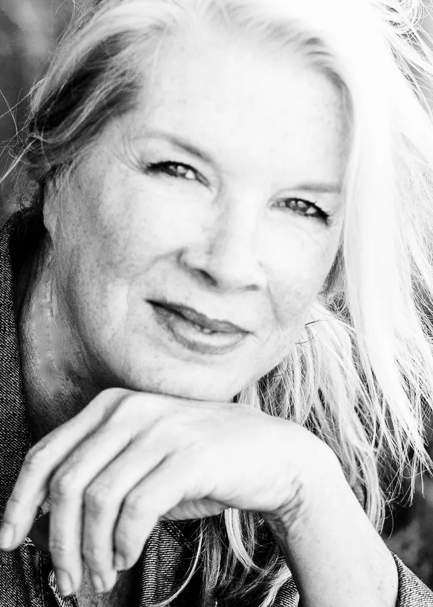
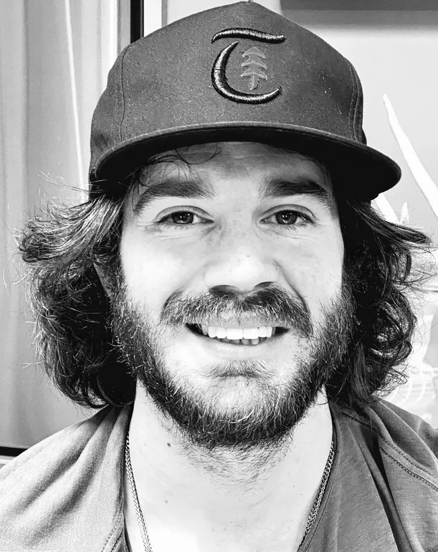
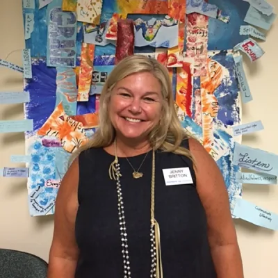
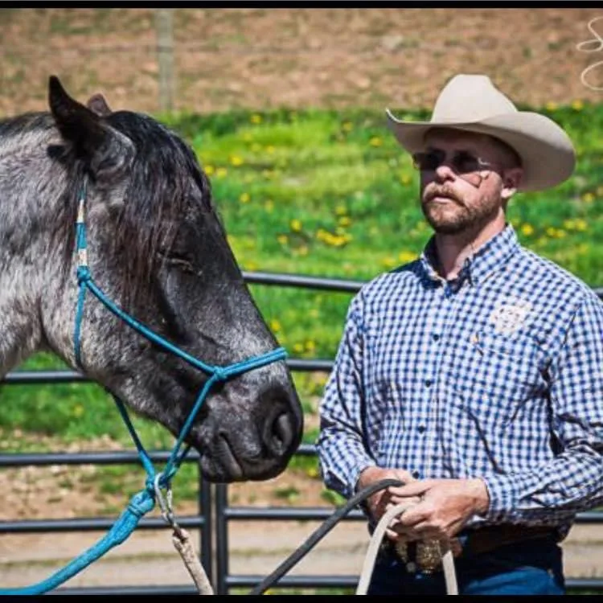

Blue Horse Sanctuary provides lifetime care for unwanted and abused horses and donkeys. We’re honored, every single day, to give them a safe and caring home in the Texas hills.

Known for her large, expressionistic equine paintings, Melissa spent a lifetime working with and painting these beautiful, sensitive animals. After all that pleasure, she wanted to give back, providing a permanent home to as many horses as possible at her family ranch.
A graduate of the Meadows School of the Arts at SMU, she has lived and worked in New York, Los Angeles, and Europe. Today she splits her life between Dallas, Telluride, and her beloved WildWood Ranch.

About 90 miles southwest of Dallas and 70 south of Fort Worth, the ranch is spring-fed ponds, coastal Bermuda hay fields, pipe-and-cable fencing, and loafing shelters, room for the herd to roam, rest, and heal.

Many of our horses arrive with injuries that other people had already given up on. Our horseman Kent has a gift for healing wounds and tendons that seemed to doom a horse, patiently, over months, until a “no chance” becomes a long, happy life.
It’s slow, hands-on, expensive work. It’s also the whole point.
A registered public charity, EIN 86-1885217. Gifts are tax-deductible to the extent allowed by law.
We maintain our verification with the Global Federation of Animal Sanctuaries, the gold standard for animal care.
Since becoming a nonprofit we’ve grown to 40 residents, with better fencing, shelters, and organic hay.
A compassionate group, each sharing a connection to the natural world and a love of horses.

Painter, owner of Blue Horse Gallery, and proprietor of WildWood Ranch.

Chef and sommelier who helps facilitate the ranch’s Equine Therapy programs each summer.

A licensed clinical social worker and therapist devoted to the sanctuary’s mission.

The hands and heart behind our rehabilitations, quietly bringing horses back to soundness.